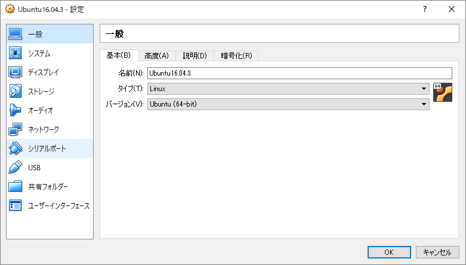
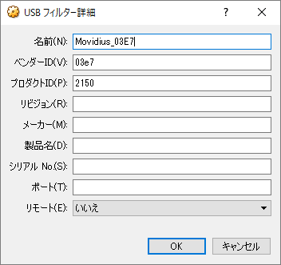
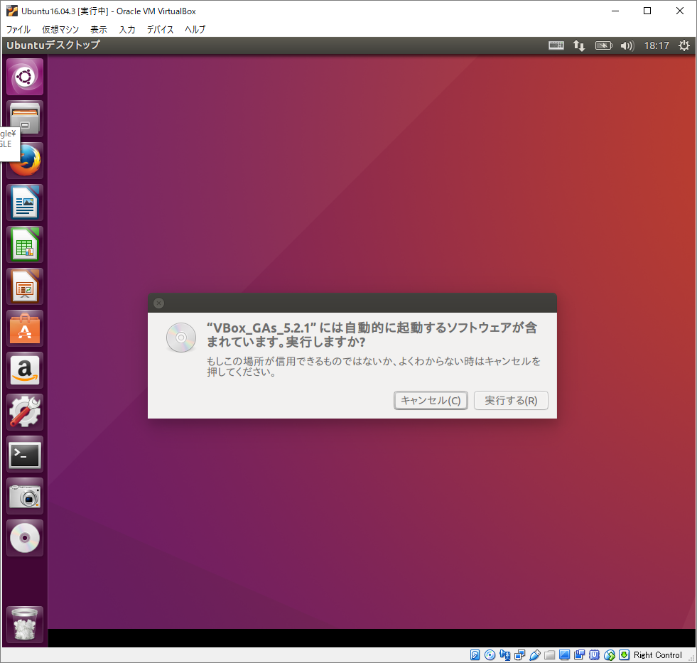

セットアップ方法¶
Movidius Neural Compute Stick(以降Movidius NCS)は、Ubuntu 16.04以降のOSにのみ対応しています。
メインPCがUbuntuの方はそのままサンプルコードを試すことが出来ますが（主に自分） 通常試す際はWindowsやMacが多いと思われるので、その際のテクニックをまとめます。
◇購入方法（Amazon.jp）¶
▼ Windows、Macの場合¶
まず、WindowsやMacにUbuntuを動かす為の仮想環境を構築します。
流行りのDockerとか使う手も有りますが、ここはDockerを使わない仮想環境ソフト「Virtual Box」を使って説明します。
◇Virtual Boxのインストール¶
Virtual Boxをインストールします。
https://www.virtualbox.org/wiki/Downloads
ここより、VirtualBox 5.2.0 platform packages.の中より自分のOSに合わせたパッケージをダウンロードします。
ついでに、あると便利な VirtualBox 5.2.0 Oracle VM VirtualBox Extension Pack も一緒にダウンロードします。 これはOSとか関係なくダウンロードだけ行います。（後で使う）
ダウンロードしたVirtualBox 5.2.0 platform packagesをダブルクリックし、通常通りインストールを行います。
インストール後、仮想環境を作る画面になるので、Ubuntu環境を整えます。
◇Virtual BoxにUbuntu環境を整えます¶
何やら書くのが大変なので、以下のリンクを参照の上。
「VirtualBoxにUbuntu16.04をインストール」 https://qiita.com/ykawakami/items/4bae371932110b2e25e3
Ubuntu16.04は以下のサイトよりダウンロードが可能です。 https://www.ubuntu.com/download/desktop
インストール後、先ほどダウンロードしたVirtualBox 5.2.0 platform packagesをダブルクリックするとUSB周りの設定が出来るように成ります。
◇Virtual BoxのUSBフィルタを弄る¶
さて、無事にUbuntu16.04が動いていると思います。（って事にしてます）
一旦、Ubuntuを終了し、Virtual Boxの設定画面に戻ります。

図の[設定(S)]をクリックし、
{kind=link}
の画面より[USB]を選択し、

ここでUSBを有効化にチェック
お使いのPCにMovidiusを接続しますが、その接続先がUSB3.0であれば[USB 3.0(xHCI)コントローラ]にチェック。
接続先がUSB2.0であれば、[USB 2.0(EHCI)コントローラ]にチェック。
| note: | ここのチェックを間違えると動かないので注意 |
|---|
続いて、USBデバイスフィルタにUSBデバイスを追加するので、USBマークに＋と書いてある箇所をクリックし
{kind=link}
と入力し、続いて再度USB＋のマークをクリックし

と入力する。
再度見直して、一番先頭に ベンダーIDが[03E7]のモノがあり、続いて二番目にベンターID[040E]の物がある順番になっているか確認。
| note: | ここの順序（優先順位）を間違えると動かないので注意 |
|---|---|
| note: | Macの場合、ベンターID[040E]の箇所がベンターID[03E7]でプロダクトID[f63b]になる事があるので失敗した際は変更をおすすめします。 |
◇Virtual Box上のUbuntuを動かす¶
Virtual BoxでUbuntuを起動すると、以下の画面のようになり、

ここでUSB機能を追加するための仮想CDドライブを挿入

Virtual Boxのウィンドウより一番したの Guest Additions CDイメージの挿入 をクリック
すると、インストールなど自動でやってくれるそう。
{kind=link}
ルートのパスワードなどを入力し、この文字列[Preas Return to clode this windows]となればエンターで終了します。

これで開発環境を作成する環境が整うので、ターミナルよりこの状態で次のステップへ。

◇UbuntuにMovidius SDKを入れる¶
ターミナルより、以下のコマンドをペタばりでちゃんと動く
mkdir -p ~/workspace
cd ~/workspace
git clone https://github.com/movidius/ncsdk.git
cd ~/workspace/ncsdk
make install
開発環境のダウンロードからコンパイルまで全部行ってくれます。数分から１時間程度コマンドがダラダラと実行されていきます。
完了したら、次に
cd ~/workspace/ncsdk
make examples
を入力して、USBに接続されたMovidiusを使って実際に深層学習を行っていきます。
| note: | ここで赤文字のエラーが出た際は、前のUSBフィルタを疑ってください（一番間違える箇所） |
|---|
で、無事に赤文字も出ずに完了すれば、ひとまず開発を行う環境が出来たので後は応用です。
| 著者: | 北神 雄太(Yuta Kitagami) |
|---|---|
| 連絡先: | kitagami@Artifactnoise.com |
| 公開日: | 2017/10/27 |